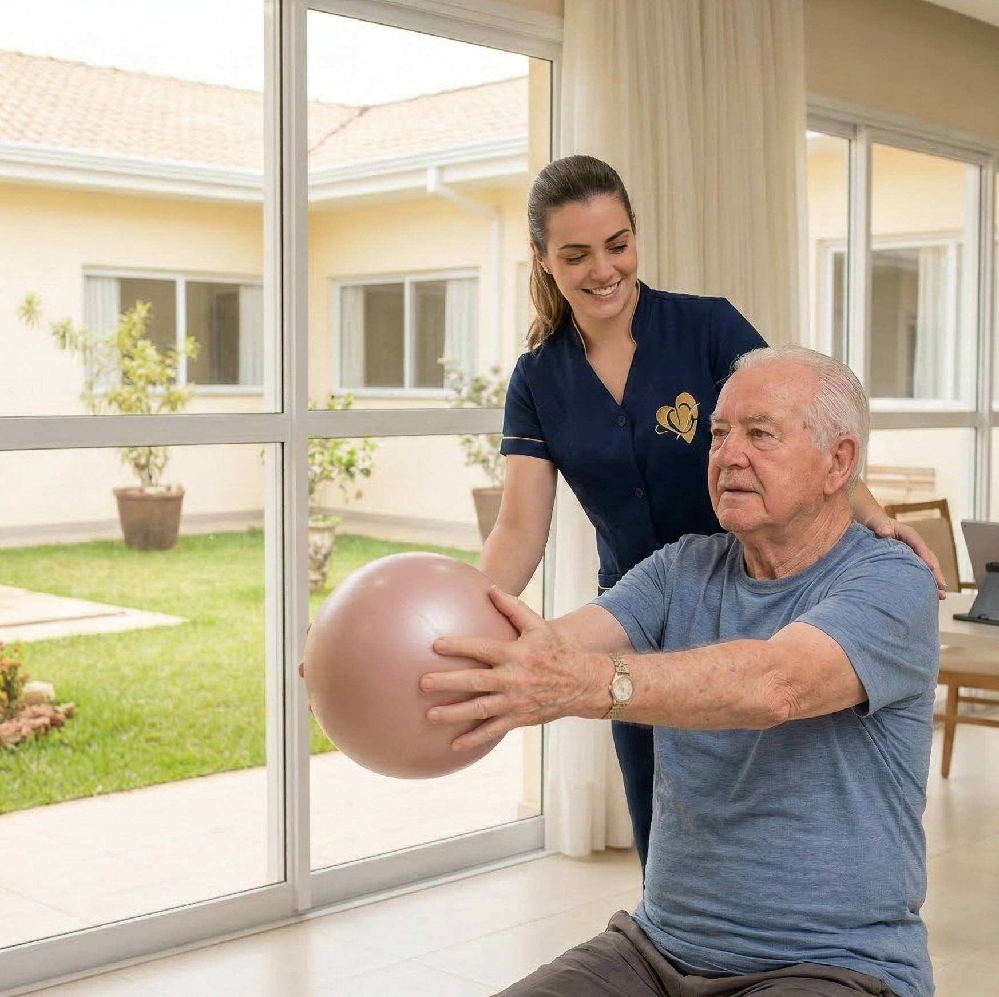
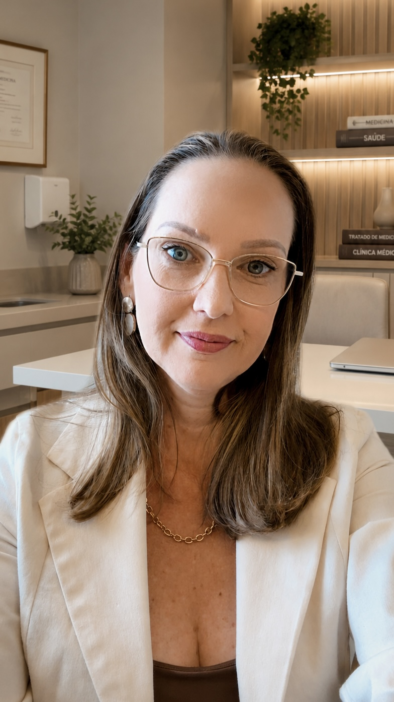
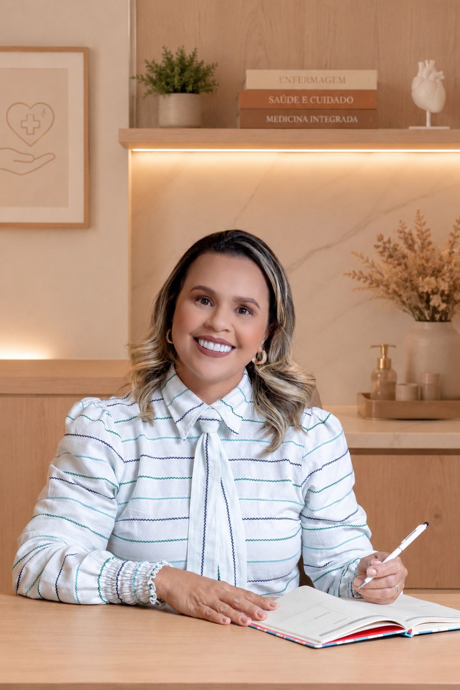

Consultório
Atendimento presencial no Centro Clínico Vital Brazil — Entrada B, Sala 311 (2º andar).
- Avaliação Geriátrica Ampla
- Acompanhamento clínico
- Testes cognitivos
Cuidado completo, multidisciplinar e personalizado para cada idoso — no consultório, em domicílio em todo o DF e por telemedicina em qualquer lugar do mundo. Tudo conduzido por uma equipe especialista em geriatria e gerontologia.

A GerontoVidas nasceu da convicção de que envelhecer com saúde, autonomia e dignidade não é um privilégio, mas um direito — construído com atenção, ciência e afeto.
Há mais de 15 anos atuando na assistência ao idoso em Brasília, oferecemos um cuidado integral e humanizado, por meio de uma equipe multidisciplinar especializada nas particularidades do envelhecimento. Nosso compromisso é promover um atendimento ético, acolhedor e tecnicamente qualificado, respeitando a singularidade de cada paciente e sua família.
Três formas de cuidar com a mesma equipe e o mesmo padrão de atenção.
Atendimento presencial no Centro Clínico Vital Brazil — Entrada B, Sala 311 (2º andar).
Quando ir ao consultório é difícil, a equipe vai até o paciente. Atendemos toda a região do DF.
Consultas online para retornos, orientações familiares e segunda opinião — onde você estiver.
Profissionais especializados em geriatria e gerontologia cuidando do idoso de forma realmente integrada.
Equipe médica especializada em geriatria, avaliando o processo de envelhecimento de cada paciente de forma integral e personalizada.
Atua na prevenção e reabilitação do idoso, preservando a função motora e retardando incapacidades para promover autonomia.
Adapta a alimentação às necessidades do idoso, prescrevendo e acompanhando a recuperação nutricional ao longo do cuidado.
Acolhe o idoso e a família, auxiliando no enfrentamento das mudanças emocionais e psíquicas próprias do envelhecimento.
Avalia a funcionalidade do idoso e conduz cuidados clínicos e domiciliares, coordenando a continuidade do tratamento.
Apoia o idoso nas atividades básicas do dia a dia — alimentação, higiene, deslocamento — com atenção, paciência e respeito.
Cuidado bucal preventivo, curativo e paliativo no domicílio — fundamental para alimentação, fala e autoestima do idoso.
Promove longevidade ativa fortalecendo ossos, músculos e sistema imune — ajuda a prevenir osteoporose, depressão e diabetes.
Atua na comunicação humana — fala, voz e audição — e nas funções de engolir, respirar e mastigar com segurança.
Executa cuidados de rotina, administra medicações e acompanha o paciente de perto sob orientação do enfermeiro responsável.
Devolve independência nas atividades de vida diária — vestir-se, alimentar-se, cuidar de medicação — e estimula funções cognitivas.
Coordena planos de cuidado, articula a equipe multidisciplinar e mantém a família informada e segura ao longo de todo o atendimento.
A base de todo cuidado na GerontoVidas. Em uma ou poucas consultas, mapeamos saúde clínica, função, cognição, humor e contexto familiar — para construir um plano realmente sob medida.
Agendar avaliaçãoAvaliação de memória, atenção e raciocínio.
Rastreio de depressão, ansiedade e apatia.
Capacidade para atividades do dia a dia.
Avaliação de marcha, equilíbrio e risco de quedas.
Peso, ingestão e composição corporal.
Análise crítica e desprescrição segura.
Manejo integrado de doenças crônicas.
Cinco compromissos que tornam o atendimento da GerontoVidas diferente.
Direção técnica que une medicina e enfermagem geriátrica, com mais de 15 anos de experiência — visão integrada da saúde do idoso e decisões seguras sobre doenças crônicas, medicamentos e funcionalidade.
Geriatria, enfermagem, fisioterapia, nutrição, fonoaudiologia e psicologia trabalhando em conjunto. Um cuidado completo, focado em qualidade de vida.
Cada idoso é único. Avaliamos clínica, cognição e funcionalidade para construir um plano adaptado às necessidades reais do paciente e da família.
O cuidado domiciliar permite que o idoso permaneça em seu ambiente familiar, reduzindo riscos de infecções hospitalares e promovendo bem-estar.
Nosso objetivo é preservar a independência, a dignidade e a qualidade de vida do idoso pelo maior tempo possível — não apenas tratar doenças.
Sócias e fundadoras da clínica — medicina e enfermagem geriátrica conduzindo o cuidado em conjunto, com ciência, ética e afeto.

Sócia · Médica Geriatra · CRM-DF 14730 · RQE 10069

Sócia · Enfermeira Geriátrica · COREN-DF a confirmar
Estamos preparando uma nova clínica para ampliar nosso cuidado e acolher ainda mais histórias com o mesmo padrão de atenção, ciência e afeto.
Mais informações em breve. Acompanhe nossas redes ou nos chame no WhatsApp para ser avisado quando abrirmos as portas.
No momento, o atendimento é apenas particular. Emitimos nota fiscal para solicitação de reembolso junto ao seu plano de saúde ou para dedução no imposto de renda.
Sim. O atendimento de pacientes com demência — incluindo Alzheimer dentre outras — é uma das principais especialidades da GerontoVidas. Realizamos investigação diagnóstica, manejo medicamentoso e suporte à família ao longo de toda a evolução da doença.
Sim. Fazemos avaliação cognitiva completa, com testes de memória, atenção e raciocínio, além da investigação clínica das causas, tanto em consultório, online ou em domicílio. Esse trabalho é conduzido em parceria entre geriatra e neuropsicóloga, quando necessário.
Muitas pessoas acreditam que, por terem vários especialistas, já estão tendo um cuidado completo. Mas o idoso não é dividido em partes. O cardiologista, o endócrino, o urologista… todos eles são importantes. Mas quem olha para o paciente como um todo?
O geriatra integra todas as informações, avalia os medicamentos em conjunto, se há interação medicamentosa, se são apropriados para uso pelo idoso, entende as limitações, a funcionalidade, a memória, o humor, o risco de quedas, a alimentação, o sono e a qualidade de vida daquele idoso. Mais do que tratar doenças, o geriatra busca preservar autonomia, independência e bem-estar.
E esse acompanhamento não precisa começar apenas quando surgem problemas. Ele pode — e deve — começar cedo, com foco em prevenção, envelhecimento saudável e planejamento individualizado, seja no consultório, online ou no atendimento domiciliar.
Não, o atendimento domiciliar não é exclusivo para idosos acamados. Qualquer pessoa com dificuldade de locomoção ou que necessite de cuidados contínuos pode receber esse serviço.
Cuidadores são treinados para auxiliar ou executar todas as atividades que os assistidos seriam capazes de realizar sozinhos caso não estivessem incapacitados total ou parcialmente — incluindo alimentação, manutenção da higiene pessoal, organização do ambiente, oferta de medicamentos orais, participação em atividades de lazer, estimulação cognitiva, dentre outras.
O prazo para início das atividades no domicílio varia de um dia a duas semanas, a depender do tipo de cuidado e da disponibilidade de pessoal. Em algumas situações específicas, esse prazo pode ser encurtado ou expandido.
Sim. Fazemos treinamento e capacitação de acompanhantes, secretárias do lar, cuidadores e familiares. Contamos com um time de especialistas dispostos a ouvir, atender as necessidades, otimizar e reorganizar a rotina de cuidados ao idoso e da residência de forma prática e eficiente, buscando leveza e harmonia.
Contamos com uma gestora de saúde, responsável por acompanhar, organizar e integrar toda a comunicação da equipe multiprofissional. Ela alinha as condutas, acompanha as demandas, identifica as necessidades do paciente e garante que todos os profissionais estejam caminhando na mesma direção: o melhor cuidado possível.
O paciente é um só. E o cuidado também precisa ser integrado.
Sim. E muitas vezes isso faz toda a diferença. Mesmo acamado, o idoso pode se beneficiar — e muito — de um acompanhamento multiprofissional, principalmente da fisioterapia.
A fisioterapia ajuda a prevenir rigidez, dores, contraturas, perda muscular, feridas por pressão, complicações respiratórias e até infecções. Além disso, pequenos estímulos podem melhorar o conforto, a circulação, a respiração e a qualidade de vida.
Os engasgos podem acontecer por alterações da deglutição, fraqueza muscular, doenças neurológicas, demências, sequelas de AVC, Parkinson e até pelo uso de alguns medicamentos. O profissional mais importante nessa investigação é o Fonoaudiólogo, junto com o acompanhamento médico.
O que o Fonoaudiólogo faz? Avalia como o idoso mastiga, engole, quais alimentos oferecem mais risco e quais estratégias podem tornar a alimentação mais segura. Em muitos casos, pequenas mudanças na consistência da comida, na postura ou na forma de oferecer os alimentos já reduzem bastante o risco de engasgos.
Além disso, o acompanhamento ajuda a prevenir complicações graves, como desnutrição, desidratação e pneumonia por broncoaspiração.
O nutricionista é o profissional que ajusta a dieta para garantir que o paciente não desnutra nem engorde excessivamente devido aos esquecimentos. Sua atuação é indispensável para:
O psicólogo atua como um pilar essencial no cuidado da demência, oferecendo suporte tanto para quem tem o diagnóstico quanto para quem cuida. O foco do trabalho se divide em duas frentes principais:
Ajuda para o paciente
Ajuda para a família e cuidadores
Sim. Temos uma enfermeira especialista em feridas. Nossa profissional vai até a sua residência para avaliar detalhadamente o tipo de lesão, o estágio da ferida e a pele do paciente. Após a avaliação, ela define e orienta qual o curativo e a cobertura ideal (como alginato, hidrocoloide ou prata) para acelerar a cicatrização.
Além disso, dispomos da Laserterapia domiciliar: uma tecnologia inovadora que reduz a dor, combate inflamações e acelera drasticamente o fechamento da ferida de forma segura.
A frequência das sessões de laserterapia varia conforme o estado da ferida, mas o padrão inicial costuma ser de 2 a 3 vezes por semana. Conforme a lesão evolui, nossa enfermeira especialista ajusta essa frequência:
O intervalo ideal será definido logo após a primeira avaliação presencial da nossa enfermeira, que analisará o tamanho, profundidade e o tecido da ferida.
Sim. Devido à condição clínica fragilizada, pacientes que fazem uso de sonda nasoenteral necessitam de alimentação e cuidados específicos. Os mesmos cuidados são válidos para outros tipos de sonda, como a vesical (urina) e ostomias (colostomia, gastrostomia, ileostomia, etc.). Realizamos também a sondagem vesical de alívio / intermitente em pacientes com disfunção do esvaziamento da bexiga.
Sim, é perfeitamente possível tratar o idoso em casa com medicamentos intramusculares ou por meio da hipodermóclise. Essa é uma das principais facilidades desse tipo de serviço, permitindo continuidade do tratamento sem necessidade de deslocar o paciente até um hospital.
Medicamentos comuns aplicados via intramuscular ou hipodermóclise no domicílio: alguns antibióticos, vitaminas, analgésicos, antiinflamatórios… A hidratação também é possível em caso de paciente desidratado.
Exigências obrigatórias para a aplicação em casa:
Sim. Oferecemos assistência ao paciente portador de doença incurável ou em estágio avançado de enfermidade ameaçadora da vida. Focando na pessoa e não na doença, oferecemos terapias voltadas ao alívio da dor e sofrimento, assim como demais sintomas decorrentes da patologia, sempre levando em consideração os valores de vida que o paciente tem.
Centro Clínico Vital Brazil
Entrada B · Sala 311 (2º andar)
Brasília — DF
Segunda a Sexta: 8h às 18h
Sábado: 8h às 12h
Toda a região do DF
Atendimento somente particular